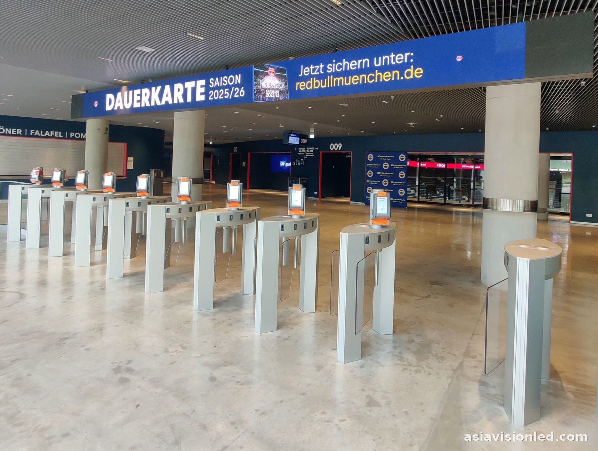
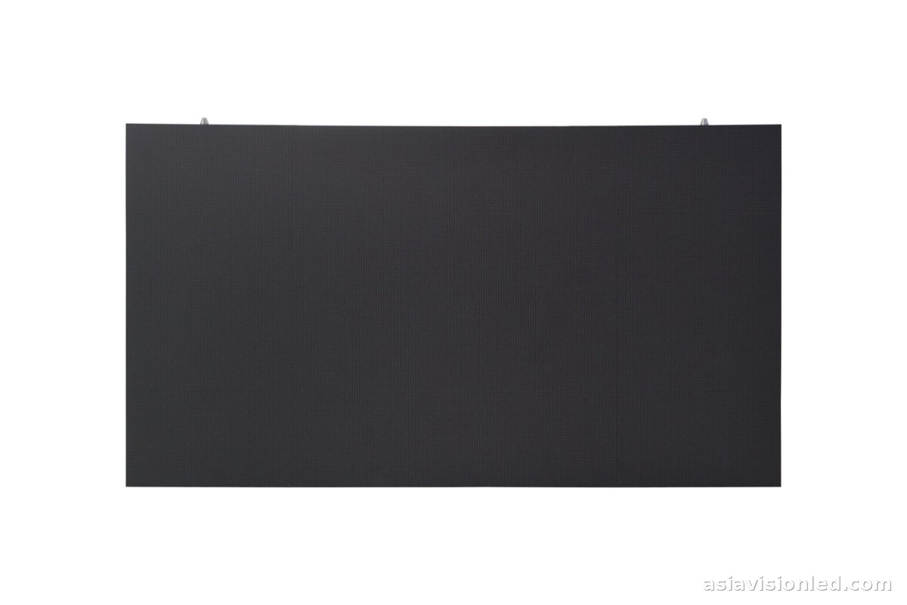
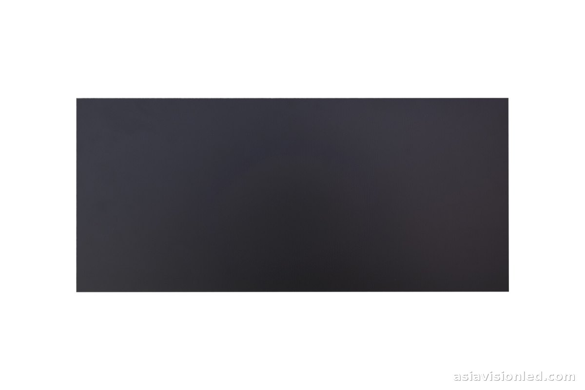
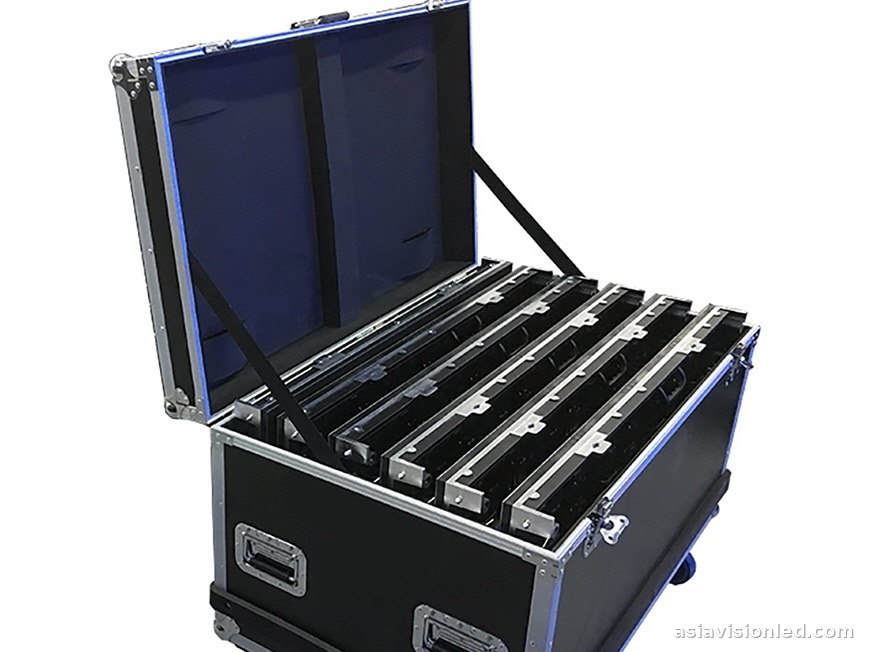

By Danny · 2026-11-17
Cleaning an LED video wall is not the same job as wiping a monitor or a shop window. The safe method depends on the module face: an indoor SMD panel with exposed packages, a COB or GOB surface with a continuous coating, or an outdoor cabinet with seals and drains. The wrong cloth or liquid can knock lamps off a mask, haze a coating, or drive moisture into a joint that an IP rating never authorised you to soak.
This guide is for facilities, rental and integrator teams. It draws on published manufacturer care advice, not a substitute for the written procedure that belongs to that model. Asia Vision has not published a per-model cleaner list on its product pages, so this article does not invent one. If a handover pack names an approved cloth or cleaner, that document wins.
The existing preventive maintenance guide treats cleaning as a scheduled task. This article covers the method. For how the faces are built, see the COB technology guide and COB vs GOB vs SMD.
A conventional indoor SMD module carries individual LED packages on the board, usually with a plastic mask around them. The packages stand slightly proud of the surface, so a snagging fibre, a sideways wipe or too much pressure can loosen a lamp or lift a mask. Dust also settles in the gaps, which tempts people to blow or scrub harder than the face can take.
A COB module is different at the face. The chips are bonded to the substrate and then encapsulated, so the viewer sees a continuous surface rather than a field of packages. That is also why a COB line is not an SMT placement process: Asia Vision operates eight IC lines and seven SMD lines, and COB modules have no SMT placement step. The smoother face is easier to wipe evenly, but a coating can still haze or streak if the cleaner is wrong, and liquid can still travel along module edges.
GOB (glue on board) sits between the two: a clear layer is dispensed over an SMD face and tolerates light contact better than bare SMD, but solvents and moisture at the potting edge are still a risk. The GOB encapsulation guide explains the structure; use only what the product documentation allows.
Outdoor modules add gaskets, cable glands, drainage and a published ingress rating. An IP figure describes a tested enclosure, not permission to pressure-wash a facade. See also the IP rating guide.
Switch the wall off through its normal shutdown, and isolate the supply before anyone works on the face or opens a cabinet. A dark, cool screen makes dust easier to see in raking light and is safer to touch. Nobody should be wiping a live fine-pitch wall with a damp cloth.
Walk the wall with a torch held at a low angle before any cloth touches it. Look for loose masks, proud or missing lamps, open gaps, damaged gaskets and cabinets that are not sitting flush. Some “dead pixels” are dirt; some are hardware. If you find damage, stop and use the module replacement process with ESD precautions rather than trying to polish the fault away.
Remove loose grit first. Wiping dust that is still sitting on the face drags it across lamps and coatings. Work from the top down.

For a typical indoor SMD cabinet — the sort of fine-pitch face shown on the M-PRO series — the conservative starting method is dry. Use a clean, soft, lint-free brush or a dry microfibre cloth with almost no pressure, in one direction along the rows. Do not scrub individual packages or dig into the mask gaps.
Compressed air is a common source of damage. If it is used at all, it should be clean, dry, held well off the face and kept moving. A close blast can drive dust under lamps or stress joints, and canned air that spatters propellant is not a cleaning tool.
Do not spray any liquid onto an indoor SMD face, and do not assume that a television or glass cleaner is safe. Several published manufacturer notes for indoor SMD panels say that no liquid or spray should be used on the front of the module. If a mark remains and the manual for that exact model permits a barely damp cloth, the liquid goes on the cloth, never on the wall. If the manual is silent, leave the mark and ask the supplier.
Inspect again at an angle for lint or shifted masks. Power up only when the face is dry, then run a full-white and a full-black pattern so new pixel faults are obvious.

The front of a COB module, such as the CV-PRO face in Figure 3, is a continuous encapsulated surface. A clean microfibre cloth can move across it more evenly than across an SMD mask. That is not a licence to treat the wall like laminated glass.
Remove grit first, then use light, overlapping passes, folding the cloth often. Keep liquid away from seams, joints and connectors. If the official care note allows a damp cloth, use distilled water or the named cleaner on the cloth only, and dry the face before restoring power.
Published care notes from other manufacturers do not agree on every chemical. Some allow a water-dampened microfibre cloth on a coated COB or outdoor face and forbid solvents and soaps. Some model manuals permit a little anhydrous alcohol for a stubborn stain on a specific product and still forbid disinfectant spray and thinners. Those statements are product-specific. This article does not extend them to Asia Vision series or name a house cleaner that has not been published. Ask for the written method that belongs to the cabinets you installed.
Outdoor cleaning has two jobs: keep the face readable, and keep the enclosure as sealed as it was when it was tested. Dust and pollution reduce contrast and can clog vents. The maintenance guide already notes that dirty vents raise temperature. On a facade, the larger risk is driving water into glands, locks and module edges.
An IP65 or IP66 rating is not a pressure-washer rating. Isolate the supply and inspect gaskets and drains first. A soft brush or a low-pressure rinse is sometimes allowed on a weather-rated face — only if the manufacturer says so, and never into open cabinets, joints or live connectors. After any wet work the cabinet must drain and dry. Coastal salt is a separate problem, covered in the C5 and salt-spray guide. If you rinse a coastal wall, do it in dry weather, on a closed cabinet, and only under a written method.
In a studio, a boardroom or a concourse, people stand close enough to see streaks and fingerprints, and the wall may be in a camera shot. Use raking light, and keep tools off the lower modules. Do not use scented polishes or silicone dressings; they leave a film that cameras pick up and that attracts more dust. If the wall has an anti-reflection treatment, treat that coating as product-specific.

Touring cabinets are usually cleaned in a service area, not while they are flown. The hazards are flight-case dust, road film, spills, and connectors that must stay dry before the next load-in. Clean the face with the same SMD or COB method that matches the product, and clean the rear and locks with a dry or barely damp cloth, keeping liquid out of ports. Do not pack a damp cabinet. Label any panel with a damaged mask so it is not flown as a spare.
A rental fleet should have a written method in the shop pack, the same way it has a spares ratio. The spare parts inventory guide covers what travels with the wall.
| Tool or chemical | Why it is a problem |
|---|---|
| Pressure washer or close, high-pressure air | Forces water or grit into masks, coatings, glands and joints. |
| Window cleaner, ammonia, acetone, thinners or strong alcohol | Can haze coatings and attack masks. Use only a cleaner named in the product documentation. |
| Paper towel, abrasive pad or a dirty cloth | Scratches coatings and snags SMD packages. |
| Liquid sprayed on the face or into seams | Travels into edges, connectors and receiving-card compartments. |
| Cleaning a live or still-hot wall | Electrical risk, streaks, and contact with a damaged module. |
If a stain will not move with the approved method, leave it and ask the supplier.
Frequency follows the room, not a universal calendar. A sealed lobby wall may need only a light dusting at each planned service. A concourse, a kitchen-adjacent wall or a dusty outdoor facade needs more frequent face and vent work. Blocked vents raise temperature, so after cleaning check that fans and openings are clear.
Asia Vision’s standard warranty is three years. This article does not invent a void clause for the wrong cloth or liquid, because no such clause is quoted here from a published warranty text. Get the written care method at handover, keep a short log of what was used, and use the warranty guide for the claim path rather than a verbal assurance on a service visit.
Before the wall is accepted, ask the supplier to demonstrate cleaning on a spare module or an unobtrusive cabinet of the same type, and to leave a one-page method: face type, tools, any approved cleaner, what is forbidden, and whether outdoor rinsing is allowed. Train the people who will actually do the work, so a facilities team does not default to glass cleaner.
If you are specifying a new wall, add the care method to the submittal, next to spare modules and the service access drawings in the front vs rear service guide.
Tell us the series, the site (indoor, studio or outdoor) and how the wall is accessed. We will tell you what we can document for that product. Email info@asiavisionled.com or message us on WhatsApp at +86 172 7666 5558.
Request Cleaning GuidanceChat on WhatsApp